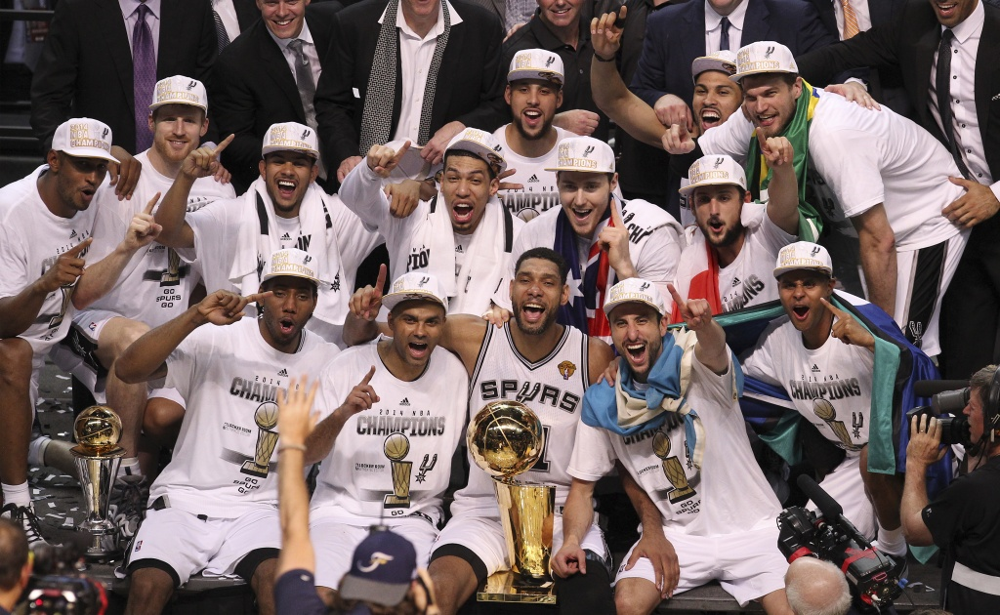

The San Antonio Spurs are an American professional basketball team based in San Antonio. The Spurs compete in the National Basketball Association (NBA) as a member of the league's Western Conference Southwest Division. The team plays its home games at AT&T Center in San Antonio.
The Spurs are one of four former American Basketball Association (ABA) teams to remain intact in the NBA after the 1976 ABA–NBA merger[8][9] and are the only former ABA team to have won an NBA championship.[10] The franchise has won NBA championships in 1999, 2003, 2005, 2007, and 2014.[11] As of the 2022–23 season, the Spurs had the highest winning percentage among active NBA franchises.[12] As of May 2017, the Spurs had the best winning percentage of any franchise in the major professional sports leagues in the United States and Canada over the previous three decades.[13] From 1999–2000 to 2016–17, the Spurs won 50 games each season,[14] setting a record of 18 consecutive 50-win seasons.[15] In the 2018–19 season, the Spurs matched an NBA record for most consecutive playoff appearances with 22.[16] The team's recent success has coincided with the tenure of current head coach Gregg Popovich[11][17] and with the playing careers of Spurs icons David Robinson (1989–2003) and Tim Duncan (1997–2016).
In the 2022-23 season, the Spurs celebrated the club's 50th anniversary.

Spurs players are active members of the San Antonio community, and many former Spurs are still active in San Antonio, including David Robinson with the Carver Academy[18] and George Gervin with the George Gervin Youth Center.[19]
The Spurs set several NBA attendance records while playing at the Alamodome including the largest crowd ever for an NBA Finals game in 1999,[20] and the Spurs continue to sell out the smaller AT&T Center (formerly SBC Center) on a regular basis.
Since 2003, the team has been forced into an extended road trip for much of February since the AT&T Center hosts the San Antonio Stock Show & Rodeo during that month. This is informally known as the "Rodeo Road Trip".[21] The Spurs have consistently posted winning road records during this period, including an NBA-record longest single road-trip winning streak (eight games out of nine, achieved in 2003).[22]
When the Spurs have won the NBA title, the team's victory parades have been boat trips on the San Antonio River Walk.[23][24][25]
